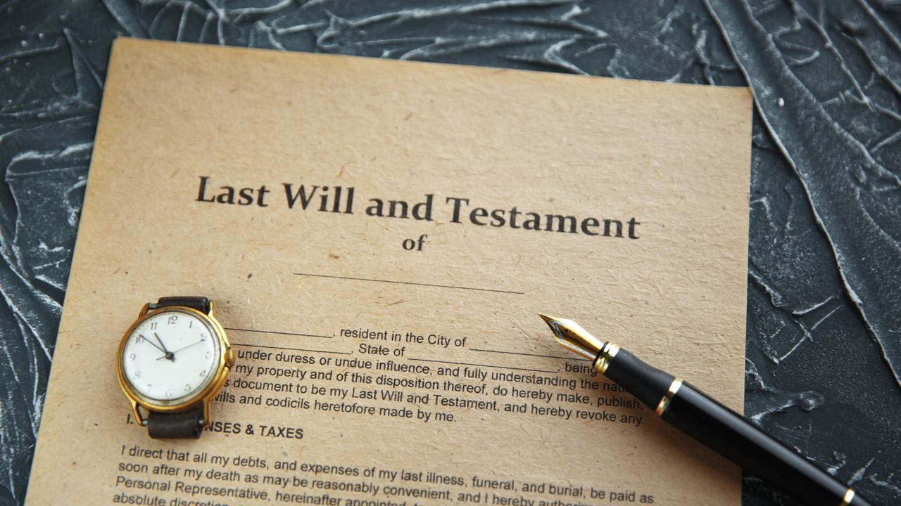

Owning in Spain · Family and law
Inheriting Property in Spain – What Owners and Heirs Need to Know
 By Anita Orłowska · · updated · 5 min read
By Anita Orłowska · · updated · 5 min read
In short: Heirs do not become owners automatically. They must accept the inheritance before a notary, pay Spanish inheritance tax within 6 months of the death and register the property in their name. Under EU Regulation 650/2012, the law of the country where the owner usually lived applies, unless their will chooses the law of their nationality. Spain applies this rule to everyone, including UK and other non-EU citizens. Inheritance tax depends on the region: in the Valencian Community and Andalusia, children and spouses pay almost nothing thanks to a 99% relief.
Buyers plan the purchase in great detail and rarely think about what happens to the home after they die. Yet Spanish succession rules differ from those in many countries, and a little planning at the start can save heirs months of paperwork and a lot of money.
Here is how inheritance of Spanish property works, which law and which taxes apply, and what you can do today to make it easy for your family.
Which country's law applies?
Since August 2015, the EU Succession Regulation (No 650/2012, often called Brussels IV) decides which law governs an inheritance:
- By default, the law of the country where the deceased had their habitual residence at death applies to the whole estate, including property in other countries.
- In a will, you can instead choose the law of your nationality.
Spain applies this rule to everyone, not only EU citizens. A British, American or Norwegian owner who lives at home can leave the Spanish home under their home law, and one who lives in Spain can choose their national law in a will.
This matters because Spanish law has forced heirship. Under the Spanish Civil Code, two thirds of the estate are reserved for the children, and a surviving spouse has a life interest in part of it. Some regions, such as Catalonia and the Balearic Islands, have their own rules. If you choose your national law, these Spanish shares usually do not apply.
Why a Spanish will helps

A will made at home is valid in Spain, but your heirs will need it officially translated, legalised with an apostille and often a legal opinion on foreign law. That takes time and money.
Many owners therefore make a separate Spanish will (testamento abierto) at a Spanish notary that covers only their assets in Spain. It costs little, usually under €150, is registered in the central Spanish register of wills and can state which country's law you choose.
Make sure the two wills match. A new will can revoke an earlier one by accident, so tell both notaries or lawyers about the other will and limit each to its own assets.
Without any will, Spanish law (if it applies) sets the order: children and grandchildren first, then parents, then the spouse, then brothers, sisters and other relatives, and finally the State. An unmarried partner inherits nothing without a will.
Inheritance tax: the region decides
In Spain, the heir pays inheritance tax (Impuesto sobre Sucesiones), not the estate. The amount depends on the value received, the relationship to the deceased, the heir's existing wealth and above all the region. Since 2023, non-resident heirs from any country can apply the rules of the region where the property is, which are usually much better than the state rules.
| Heir | Valencian Community (Costa Blanca) | Andalusia (Costa del Sol) |
|---|---|---|
| Children, spouse, parents (groups I and II) | €100,000 allowance per heir, then 99% off the tax | €1,000,000 allowance per heir, then 99% off the tax |
| Brothers, sisters, nephews, nieces, aunts, uncles (group III) | 25% off from 1 June 2026, 50% from 1 June 2027 | no regional discount |
| Others, including unregistered partners | full tax at progressive rates, with higher multipliers | full tax, with higher multipliers |
For a child inheriting a €300,000 home in the Valencian Community, the tax is in the low hundreds of euros. For a friend or an unregistered partner it can be tens of thousands. Registered couples (pareja de hecho) are usually treated as spouses in both regions.
Heirs also pay the municipal capital gains tax on the land (plusvalía municipal), and they may owe inheritance tax in their own country. Germany, for example, taxes heirs who live there and credits the Spanish tax.
Step by step for heirs
- Death certificate. A foreign certificate needs an apostille and a sworn translation.
- Certificate of last wills (certificado de últimas voluntades) from the Spanish Ministry of Justice, available 15 working days after the death. It shows whether there is a Spanish will.
- Copy of the will, or, if there is none, a notarial declaration of heirs (declaración de herederos).
- NIE numbers for every heir.
- Deed of acceptance (escritura de aceptación y adjudicación de herencia) signed at a Spanish notary, in person or through a lawyer with a power of attorney.
- Taxes: inheritance tax and plusvalía within 6 months of the death. You can ask for a 6-month extension within the first 5 months. Late payment brings surcharges.
- Land registry: register the property in the heirs' names. Only then can they sell or mortgage it.
With documents from abroad, the whole process often takes 4 to 9 months. Banks freeze the deceased's Spanish accounts until the heirs are confirmed, so keep money for taxes elsewhere.
Plan at the purchase
The best moment to think about inheritance is when you buy:
- Whose name goes on the deed. Buying jointly with a spouse or partner means half the home is already theirs.
- Make a Spanish will soon after the purchase and choose your national law if that suits your family.
- Keep the paperwork tidy: deed, Nota Simple, IBI receipts and community fees paid, so heirs find no surprises. Our guide to the Nota Simple explains what to check.
- Get advice on both countries, because the tax at home can matter as much as the Spanish tax.
Frequently asked questions
Do I need a Spanish will if I already have one at home?
It is not required, but it makes things much faster for your heirs. A Spanish will covering only your Spanish assets avoids translations and legal opinions on foreign law. Make sure it does not revoke your home will.
Does Spanish forced heirship apply to foreigners?
Only if Spanish law applies to the inheritance, usually because you lived in Spain. You can avoid it by choosing the law of your nationality in your will.
How much inheritance tax does a child pay on a home on the Costa Blanca?
Very little. In the Valencian Community children get a €100,000 allowance and then 99% off the tax, so a typical home costs a few hundred euros in tax, plus the municipal plusvalía.
What is the deadline to pay Spanish inheritance tax?
Six months from the date of death. You can request a further six months if you apply within the first five.
Can heirs sell the property before it is in their name?
No. They must first accept the inheritance at a notary, pay the taxes and register the property in their names.
Buy with your family in mind

When you buy with us, we can introduce you to a lawyer who will advise on whose name goes on the deed and prepare a Spanish will at the same time. Contact us and plan it from the start.
Sources: EUR-Lex – Regulation (EU) No 650/2012 on succession · Guía Fiscal – Inheritance tax in the Valencian Community · Guía Fiscal – Inheritance tax in Andalusia · Ministerio de Justicia – Certificate of last wills